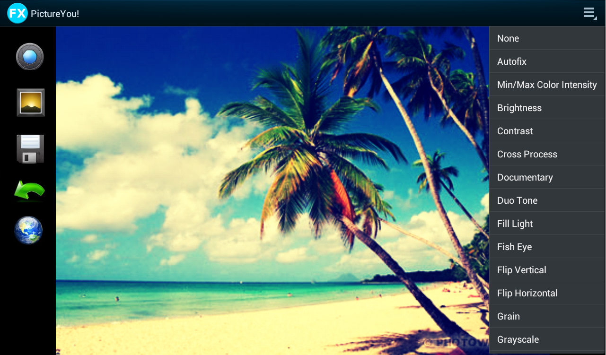

In this part, you can find all the applications I implemented during my curriculum just as my personal ones.
For the moment, you can only see one of them but more are coming! You can go through all of them by selecting the main section regarding each of these.
Do not hesitate to contact me if you have any questions about them~~!
Android Based Image Processing Application

Visual of the Android Application for Android devices with a version greater than 4.0
During my studies at the ENSEA, I made an Android Based Image Processing Application available for all Android devices using an Android version greater than 2.2 (Froyo). A particular version is available when the device use a version of Android greater or equal than Android 4.0.
After having launched the application, the user can take a photo using the camera or directly retrieve one from the gallery. After having selected the desired picture, the user can apply a combination of several picture treatments and cancel them if needed. To this day, more than twenty of them are available. The list of the ones implemented is provided below:
Brightness;
Color Intensity;
Contrast;
Cross Process;
Documentary;
Duo Tone;
Fill Light;
Fish Eye;
Flip Vertical/Horizontal;
Grain;
Grayscale;
Lomoish;
Negative;
Posterize;
Rotate;
Saturate;
Sepia;
Sharpen;
Temperature;
Tint;
Vignette.
Visual of the Android Application for Android devices with a version less than 4.0
In addition to the treatments' list given above and the possibility to save the pictures modified, the appplication can be used to send the images to another device or through the Internet using bluetooth, mail server or MMS.
Copyright Guillaume SAUSSAY 2014 | All rights reserved, even yours.